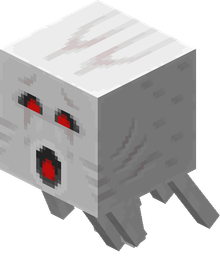
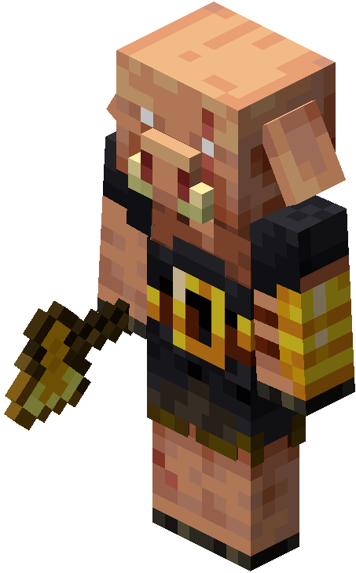
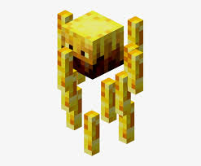
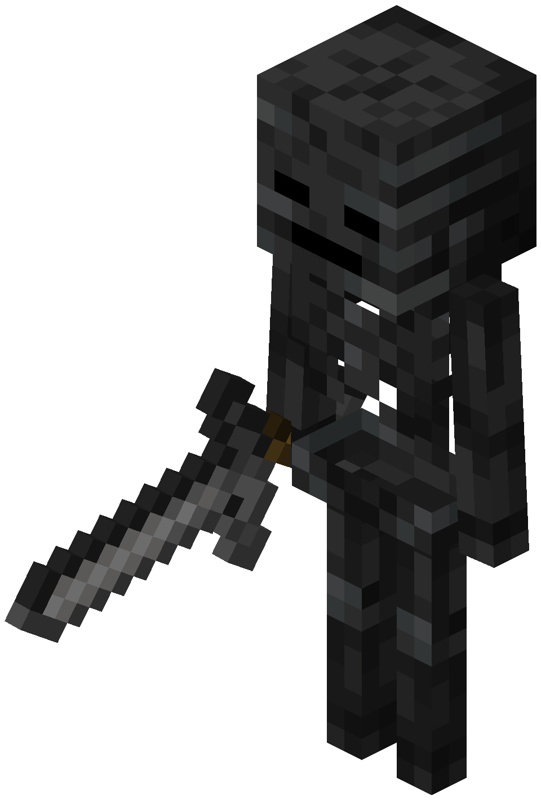

O que é o Nether?
O Nether é uma dimensão semelhante ao inferno, composta por lava, fogo, criaturas hostis e fortalezas. É essencial para avançar no jogo.
Como entrar no Nether?
Para acessar o Nether, o jogador precisa construir um Portal do Nether utilizando blocos de obsidiana, material resistente obtido quando água entra em contato com lava. O portal deve ter formato retangular, com no mínimo 10 blocos de obsidiana (sem contar os cantos opcionais).
Depois de montar a estrutura, é necessário acender a parte interna usando uma pederneira e aço. Ao ser ativado, o interior do portal ficará roxo e emitirá partículas.
Basta entrar no portal e permanecer alguns segundos parado para ser transportado até a dimensão Nether, um lugar perigoso repleto de lava, criaturas hostis e recursos raros.
Estrutura do Portal
- 10 blocos de obsidiana (mínimo)
- Formato retangular
- Acender com pederneira e aço
Mobs do Nether

Ghast
Criatura voadora que lança bolas de fogo.

Piglin
Humanoide dourado que troca itens por barras de ouro.

Blaze
Mob encontrado em fortalezas. Dropa vara de blaze.

Wither Skeleton
Esqueleto negro que causa efeito Wither.
Locais importantes
- Fortaleza do Nether
- Bastion Remnant
- Vales de Areia das Almas
- Florestas Carmesim
- Florestas Distorcidas
Recursos importantes
- Quartzo
- Netherite
- Blaze Rod
- Glowstone
- Cogumelos
Dicas de Sobrevivência
Sempre leve blocos para construir pontes, armadura de ouro para Piglins não atacarem e cuidado extremo com lava.
Curiosidade
No Nether, cada bloco andado equivale a 8 blocos no mundo normal. Isso torna a dimensão ótima para viagens rápidas.